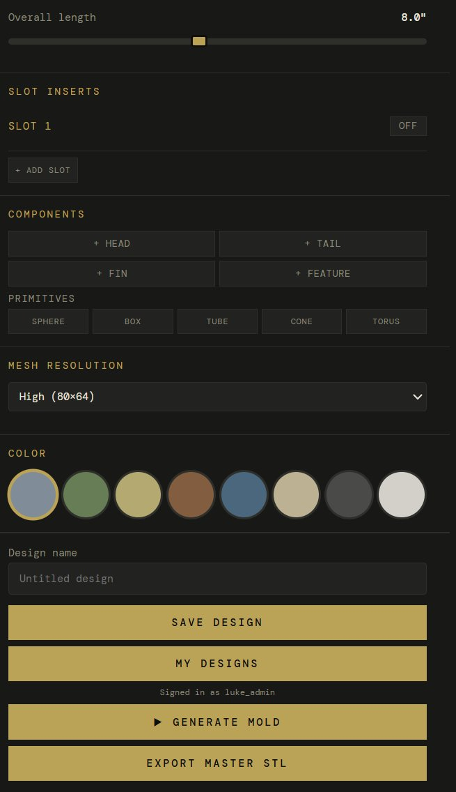
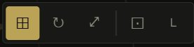
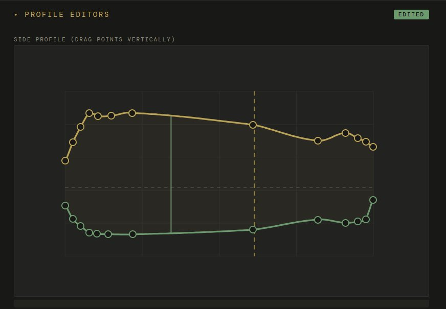
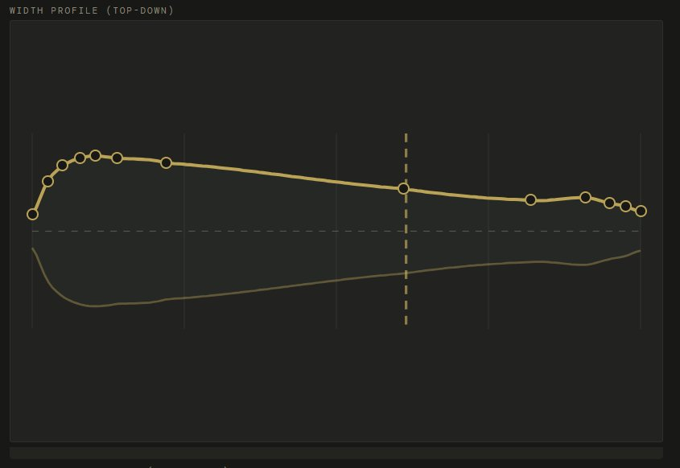
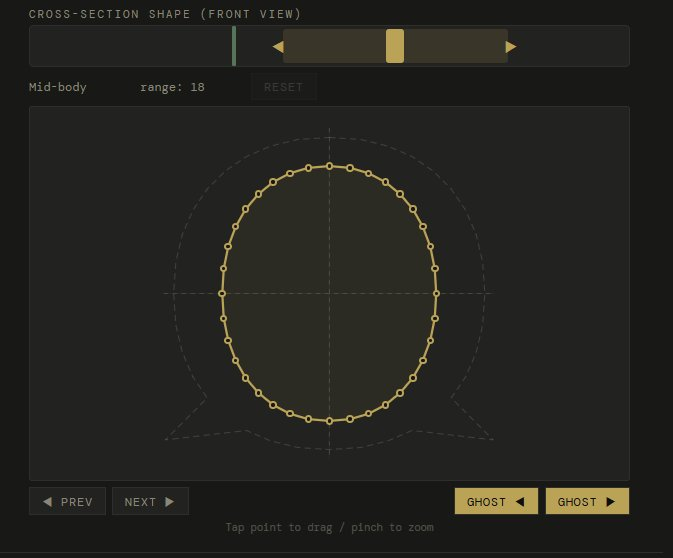
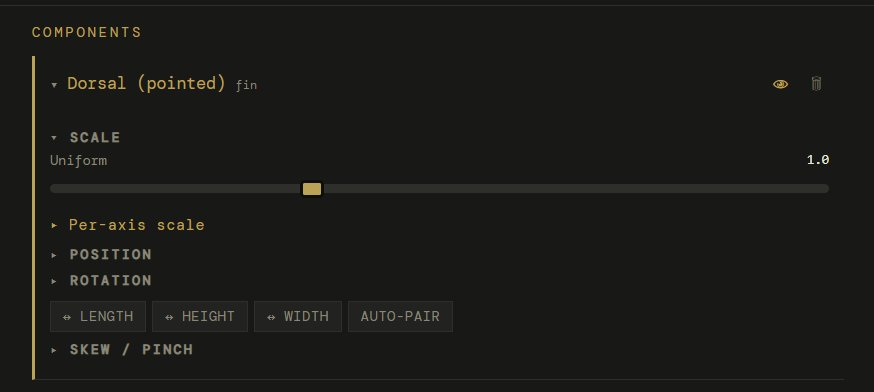
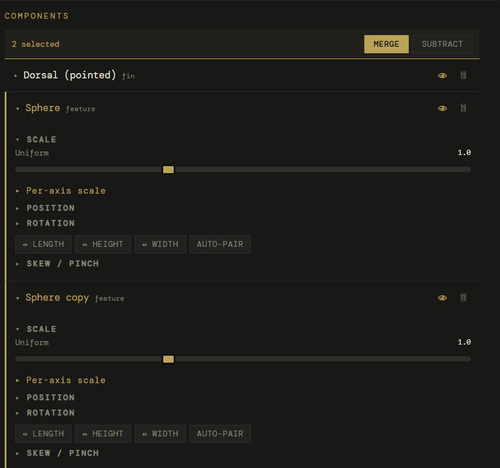
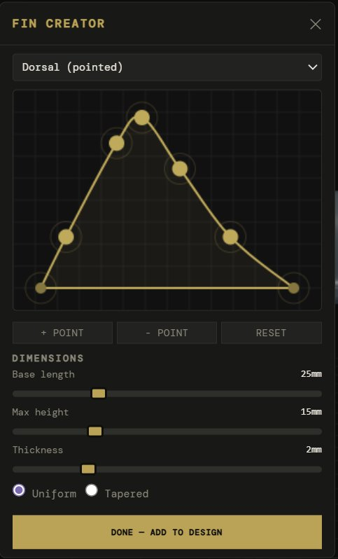
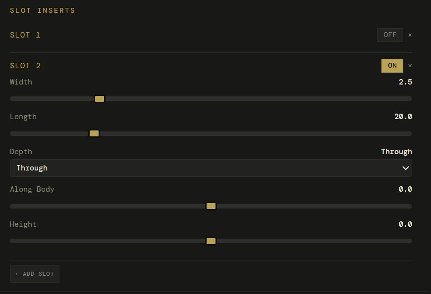

The designer is split into two areas: the sidebar on the left holds all the editors and controls, and the 3D viewport on the right shows your bait updating in real-time as you make changes.
The sidebar is organized top to bottom in the order you'll typically use it: profile editors, cross-section, overall length, slot inserts, components, resolution, color, and export.

Viewport controls
Left-click drag to orbit around the bait. Scroll wheel to zoom. Right-click drag to pan. Use the Side / Top / Front buttons at the top of the viewport to snap to preset camera angles.
The viewport toolbar in the top-left corner has buttons for view modes and display options:

Grid
Toggle the reference grid on/off
Reset view
Snap back to the default camera angle
Fullscreen
Expand the viewport to fill the browser
Wireframe
Show the mesh wireframe on the bait surface
Resolution
The Mesh Resolution dropdown controls how smooth the bait mesh is. Use Draft while designing for fast updates, and switch to High (80x64) before exporting for a smooth cavity finish in the mold.
02
Profile editors
The profile editors are the core of the designer. They control the shape of your bait using two 2D spline curves that you edit by dragging control points.

Side profile
The side profile shows your bait from the side. The gold curve is the dorsal (top) outline. The green curve is the ventral (bottom) outline. Drag any control point up or down to reshape the bait. The 3D model updates instantly.
The vertical dashed line in the center shows the currently selected cross-section station. You can see how the side profile controls the height of the bait at each point along its length.
Points are spaced along the bait from head (left) to tail (right). Drag a point up to make the back taller at that station, or down to make the belly deeper. The spline interpolates a smooth curve between your points.

Width profile
The width profile shows your bait from above. The gold curve controls how wide the bait is at each station. Drag points up to make the bait wider, down to make it narrower. A shad has a wide belly and narrow tail. A worm is narrow throughout.
Together, the side profile and width profile fully define the 3D shape. The side profile controls the vertical cross-section (how tall), the width profile controls the horizontal cross-section (how wide). The bait is the solid that fills both profiles simultaneously.
Reference photo
Click Reference Photo to upload an image of a real fish or existing bait. The photo overlays behind the 3D model so you can trace the profile. Use the Opacity and Scale sliders to align it with your bait, and the Offset sliders to position it.
03
Cross-section editor
The cross-section editor lets you control the shape of the bait at each slice along its length. This is where you make a bait round, flat, or teardrop-shaped.

The cross-section shows your bait from the front at the selected station. The gold outline is the cross-section shape with draggable control points around the perimeter. The dashed circle behind it is the default round profile for reference.
Use the slider at the top to select which station along the bait you're editing. Drag it left for the head, right for the tail.
Drag control points inward or outward to change the shape. Pull the top point up for a taller back, push the sides in for a flatter profile.
The range number shows how many neighboring stations are influenced. A higher range means your edit blends smoothly across more of the bait.
Use PREV / NEXT to step through stations one at a time, or drag the slider for quick navigation.
Ghost sections
The GHOST buttons show the cross-section of the adjacent station as a faded outline behind your current one. This helps you see how the shape transitions between stations and maintain smooth continuity.
A typical workflow: start with the side and width profiles to get the overall shape, then use cross-sections to fine-tune specific areas. For example, make the head cross-section more oval (wider than tall) and the tail more round.
04
Components
Components are additional parts you add to the bait body: heads, tails, fins, and features. They can come from the parts library, custom imports, or built-in creators.
Click any of the component buttons to add a part: + Head, + Tail, + Fin, or + Feature. You can also add primitives (Sphere, Box, Tube, Cone, Torus) for custom shapes.
Each component you add appears in the Components list below with its own collapsible panel of controls:

Scale
Uniform slider or per-axis (expand "Per-axis scale"). Controls the overall size of the component.
Position
Move the component along the body (length), up/down (height), or side to side (width).
Rotation
Rotate the component on any axis. Useful for angling fins.
Mirror
Flip the component on Length, Height, or Width axis. Auto-pair creates a mirrored copy on the opposite side (for pectoral fins).
Skew / pinch
Taper a component to a point. Great for sharpening imported heads or fin tips.
Merge / subtract
When multiple components are selected, merge them together or subtract one from another.

Multi-select
Select multiple components to see the Merge and Subtract buttons. Merge combines components into one solid. Subtract cuts one component's shape out of another.
05
Fin creator
The fin creator lets you design custom fins by shaping a 2D outline that extrudes into a 3D solid.

Click + Fin in the components section. The fin creator opens with a preset selected.
Choose a preset from the dropdown: dorsal pointed, dorsal rounded, pectoral, anal, caudal forked, or sail.
Drag the gold points to reshape the outline. The base (bottom edge) stays flat — this is where the fin attaches to the body.
Use + Point to add more control points for finer detail, or - Point to simplify.
Set the base length (how long the fin is along the body), max height (how tall it sticks up), and thickness.
Choose Uniform or Tapered thickness. Tapered makes the fin thinner at the tip for a more natural look.
Click Done — Add to Design. The fin appears in the viewport and component list with full transform controls.
Positioning fins
After adding a fin, use the viewport gizmos (G to move, R to rotate) to place it on the bait body. For pectoral fins, enable Auto-pair in the component panel to automatically create a mirrored copy on the other side.
05b
Slot inserts
Hook slot inserts create channels in your bait for placing hooks. The slot subtracts from the bait body and generates a separate printable insert card.

Each slot has controls for Width (how wide the hook channel is), Length (how long), Depth (Through cuts all the way through, or set a specific depth), and position along the body (Along Body) and vertically (Height).
Click + Add Slot to add multiple slots. Toggle individual slots ON/OFF to include or exclude them from the mold. The x button removes a slot entirely.
06
Keyboard shortcuts + gizmos
When a component is selected in the viewport, keyboard shortcuts let you quickly switch between transform modes. These follow standard 3D application conventions.
GMove (grab) the selected component
RRotate the selected component
SScale the selected component
FFocus camera on the selected component
Ctrl + DDuplicate the selected component
WSwitch to world space (global axes)
LSwitch to local space (component axes)
EscDeselect the component
DeleteDelete the selected component
Dbl-clickFocus camera on clicked mesh area
Transform gizmos
When you select a component by clicking it in the viewport, colored axis handles appear. Red = X (width), Green = Y (length), Blue = Z (height). Drag an axis handle to move/rotate/scale on just that axis. Drag the center square to move freely on all axes.
World vs Local space
Press W for world space — the gizmo axes align with the global grid. Press L for local space — the gizmo axes align with the component's own rotation. Local is usually more intuitive when a component is rotated (like an angled fin).
The gizmo toolbar appears at the bottom of the viewport when a component is selected. It shows the current mode (Move/Rotate/Scale) and a snap toggle. Hold Ctrl while dragging for temporary snap to grid increments.
07
Exporting
When your design is ready, you have two export paths.
Generate Mold
Sends your bait to the mold generator at mold.swimbaitdesigner.com. The mold generator creates a two-part injection mold with alignment pins, bolt holes, and sprue port. Export as STL for printing.
Export Master STL
Downloads the bait itself as an STL file. Use this for silicone mold making, importing into ZBrush/Blender for sculpting, or 3D printing a display model.
Save Design
Saves your current design so you can come back to it later. Stores all spline data, components, and settings.
My Designs
Load a previously saved design to continue editing or generate a new mold from it.
Tips
Getting the best results
Start with a reference
Upload a photo of the fish species you're modeling. Use the reference photo overlay to match the profile. This is faster and more accurate than eyeballing the curves.
Work big to small
Get the overall length and proportions right first with the side and width profiles. Then fine-tune cross-sections. Add components last. Don't get lost in details before the big shapes are locked in.
Use Draft resolution while designing
Draft mode updates faster and is perfectly fine for shaping. Switch to High resolution only when you're ready to export. The mold generator uses the resolution your design was sent with.
Print molds on-edge
When slicing the mold STL, orient it standing up (on-edge). This puts the layer lines along the length of the cavity for the smoothest finish. The mold generator recommends this orientation automatically.